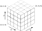

Conventions¶
Axes and indexing¶
Tomosipo follows numpy’s indexing convention. In the image below, we display the coordinate axes and indexing into a volume cube. The z-axis points upward.
{kind=link}

We display an example for a parallel geometry with its associated sinogram indexing below. The detector coordinate frame is defined by two vectors
u: Usually points sideways and to the “right” from the perspective of the source. The length of u defines the width of a detector pixel.
v: Usually points upwards. The length of v defines the height of a detector pixel.
{kind=link}
In short,
volume geometry and data are indexed in (Z, Y, X) order
projection geometries are indexed in (angle, v, u) order
projection data is stored as a stack of sinograms, indexed in (V, angle, U) order.
The coordinate system (z, y, x) is left-handed rather than right-handed.
Naming and ordering¶
The following terms are used as parameters, properties, and in function names:
shape: The number of voxels / pixels in each dimension
size: The physical size of the object in each dimension
dist: Short for distance
vec: Short for vector
obj: Short for object
vol: Short for volume
pos: Short for position: this is alway the center of an object
src: Short for source
det: Short for detector
pos: Short for position
len: Short for length
rel: Short for relative
abs: Short for absolute
num_*: Number of * (angles for instance)
In examples and code, projection and volume geometries are often abbreviated as:
pg: projection geometry
vg: volume geometry
Whenever a function takes as parameters a volume geometry, projection geometry, or operator, there is a fixed ordering:
operator
volume (data or geometry)
projection (data or geometry)